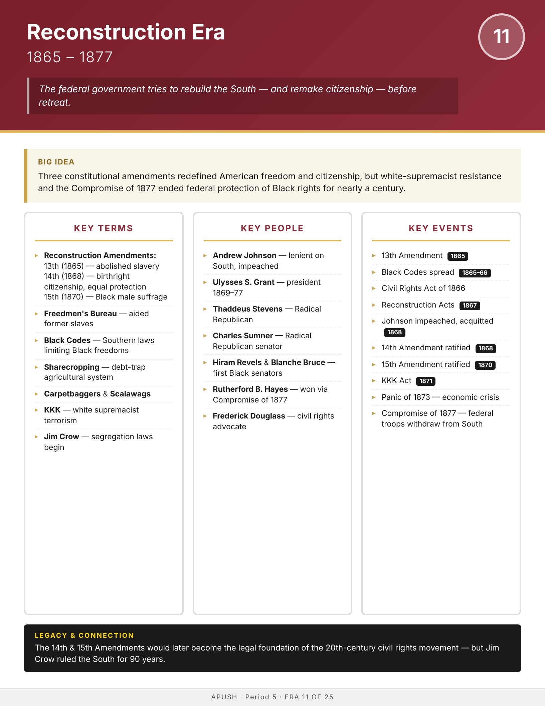

Era
Wise
AP History
AP United States History
Home
Course Sequence
Eras
Exam Prep
← Course Sequence
Era 11 of 25 · AP Period 5 · Lessons 25–27
Reconstruction
1865–1877
Open infographic full size
Print

← ERA 10
Civil War
ALL ERAS
Eras index
ERA 12 →
Gilded Age